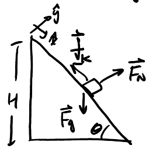
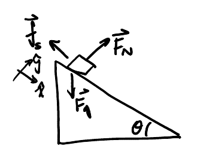

Friction
Table of Contents
1. Friction
Friction results from two objects rubbing against each other, with the general direction parallel to the surface of contact between the two objects. More specifically, friction opposes the relative motion between the two objects.
It takes a larger amount of force to first overcome static friction than to keep the block moving past kinetic friction.
1.1. Kinetic Friction
Kinetic friction occurs while an object is moving:
\begin{align} \boxed{f_k = \mu_k F_N} \end{align}where \(\mu_k\) is the coefficient of kinetic friction.
Example: Block sliding down ramp
Consider a block sliding down a ramp (from rest), with friction:

Determine the unknowns, \(\vec{a}\) and \(F_N\), if we are given \(\mu_k\). We have the following two equations:
\begin{align} mg\sin\theta - f_k &= ma \notag \\ F_N&= mg\cos\theta \notag \end{align}Simplifying, we have:
\begin{align} mg\sin\theta - \mu_kF_N &= ma \notag \\ \sin\theta - \mu_k\cos\theta &= a \notag \\ a &= g\sin\theta - \mu_kg\cos\theta \notag \\ a &= g(\sin\theta - \mu_k \cos\theta) \notag \end{align}1.2. Static Friction
Static friction occurs while an object is at rest. It increases relative to how much force is applied to the object, and therefore it is an inequality:
\begin{align} \boxed{f_s \leq \mu_s F_N} \end{align}where \(\mu_s\) is the coefficient of static friction. Static friction reaches its maximum (before allowing the object to move) at \(f_{s_\text{max}}=\mu_s F_N\).
Example: Block on ramp
Consider a block on a ramp with angle \(\theta\):

Determine the maximum angle of the ramp, \(\theta_\text{max}\), to ensure that the block remains stationary.
Since the block would be moving down and to the right, the direction of friction will oppose this motion by going up and to the left.
Through Newton's second law, we can write the following equations:
\begin{align} mg\sin\theta_\text{max} - f_{s_\text{max}} &= 0 \notag \\ F_N &= mg\cos\theta_\text{max} \notag \end{align}Consider that \(\theta\) reaches \(\theta_\text{max}\) when \(f_s=f_{s_\text{max}}=\mu_sF_N\). Thus,
\begin{align} mg\sin\theta_\text{max} - \mu_s F_N &= 0 \notag \\ \sin{\theta_\text{max}} - \mu_s\cos\theta_\text{max} &= 0 \notag \\ \tan\theta_\text{max} &= \mu_s \notag \\ \theta_\text{max} &= \tan^{-1}(\mu_s) \notag \end{align}